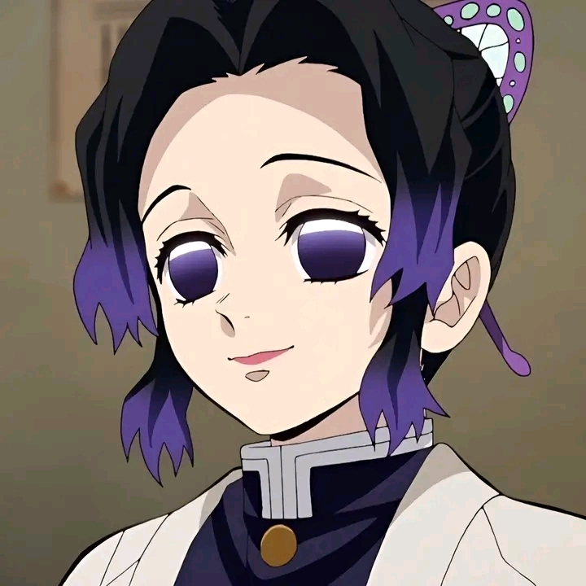

Shinobu Kocho (胡蝶 しのぶ, Kochō Shinobu) Erika Harlacher[23] (English)
The Insect Hashira. Her surname, Kochō (胡蝶), means "butterfly", hence her motif. She is cool-headed and always has a smile on her face, no matter what the situation.
Minato Namikaze (波風ミナト, Namikaze Minato), renowned as Konoha's Yellow Flash (木ノ葉の黄色い閃光, Konoha no Kiiroi Senkō; English "Yellow Flash of the Leaf"), was a legendary shinobi who became theFourth Hokage (四代目火影, Yondaime Hokage; Literally meaning "Fourth Fire Shadow") of Konohagakure.
Madara Uchiha (うちはマダラ, Uchiha Madara) was the legendary leader of the Uchiha Clan. He founded Konohagakure alongside his childhood friend and rival, Hashirama Senju, with the intention of bringing about an era of peace. When the two couldn't agree on how to achieve that peace, they fought for control of the village, a conflict which ended in Madara's death./div>
Tanjiro Kamado (Japanese: 竈門 炭治郎, Hepburn: Kamado Tanjirō) is a fictional character and the protagonist of Koyoharu Gotouge's manga Demon Slayer: Kimetsu no Yaiba. Tanjiro goes on a quest to restore the humanity of his sister, Nezuko, who was turned into a demon after his family was killed by Muzan Kibutsuji following an attack that resulted in the death of his other relatives